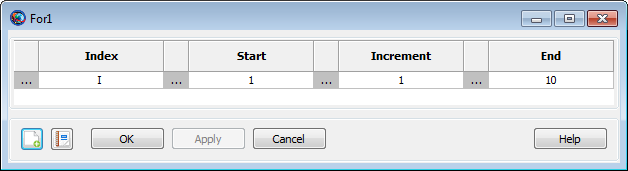

For
For — Execute a series of commands a specified number of times
Script Syntax
ForIndex=Start:[Increment:]End[script statement] …EndFor
Description
The For command is a control logic statement that executes a series of commands a specified number of times. The command argument must have one of the following forms:
Index =
Start:End
This syntex increments Index from Start to End in steps of 1, repeating the script statements until Index is greater than End. If Start is greater than End, then the script statements do not execute.
Index =
Start:Increment:End
This syntax increments Index from Start to End in steps of Increment, repeating the script statements until Index is greater than End if Increment is positive and less than End if Increment is negative. If Start is less than End and Increment is negative, or if Start is greater than End and Increment is positive, then the script statements do not execute.
Options
| Option | Description | ||||||||||
|---|---|---|---|---|---|---|---|---|---|---|---|
| Index | Independent variable in a for loop. Index is computed according to the arithmetic progression defined by the values for Start, Increment, and End.
| ||||||||||
| Start | Initial value for the Index parameter
| ||||||||||
| Increment | The Increment parameter is used to compute the arithmetic progression of the loop Index such that pass i through the loop is Start + i* Increment if the resulting value satisfies the constraint defined by End.
| ||||||||||
| End | The End parameter is the upper (or lower if Increment is negative) bound for the Index.
|
GUI
|  |
The For command GUI panel contains fields for
all of its parameters: Index,
Start, Increment, and
End. To edit the values, click the field value you
wish to change and type the new value (e.g. 5,
anArray(1,5), or
Spacecraft.X). Alternately, you can either
right-click the field value or click the ellipses (…)
button to the left of the field. This displays the
ParameterSelectDialog window, which allows you to
choose a parameter from a list.
 |
Remarks
The values of the Index, Start, Increment, and End parameters can be any of the following types:
Literal numeric value (e.g. 1, 15.2, -6)
Variable resource
Array resource element
Resource parameter of numeric type (e.g. Spacecraft.X, ChemicalThruster.K1)
with the extra requirement that if a Resource parameter is used for Index, the parameter must be settable.
The index specification cannot contain mathematical operators or parentheses. After execution of the For loop, the value of Index retains its value from the last loop iteration. If the loop does not execute, the value of Index remains equal to its value before the loop was encountered.
Changes made to the index variable inside of a For loop are overwritten by the For loop statement. For example, the output from the following snippet:
For I = 1:1:3
I = 100
Report aReport I
EndForis:
100 100 100
Changes made to the the Start, Increment, and End parameters made inside of a loop do not affect the behavior of the loop. For example, the output from the following snippet:
J = 2
K = 2
L = 8
For I = J:K:L
J = 1
K = 5
L = 100
Report aReport I
EndForis:
2 4 6 8
Examples
Propagate a spacecraft to apogee 3 times:
Create Spacecraft aSat
Create Propagator aPropagator
Create Variable I
BeginMissionSequence
For I = 1:1:3
Propagate aPropagator(aSat, {aSat.Apoapsis})
EndForIndex into an array:
Create Variable I J
Create Array anArray[10,5]
BeginMissionSequence
For I = 1:10
For J = 1:5
anArray(I,J) = I*J
EndFor
EndFor